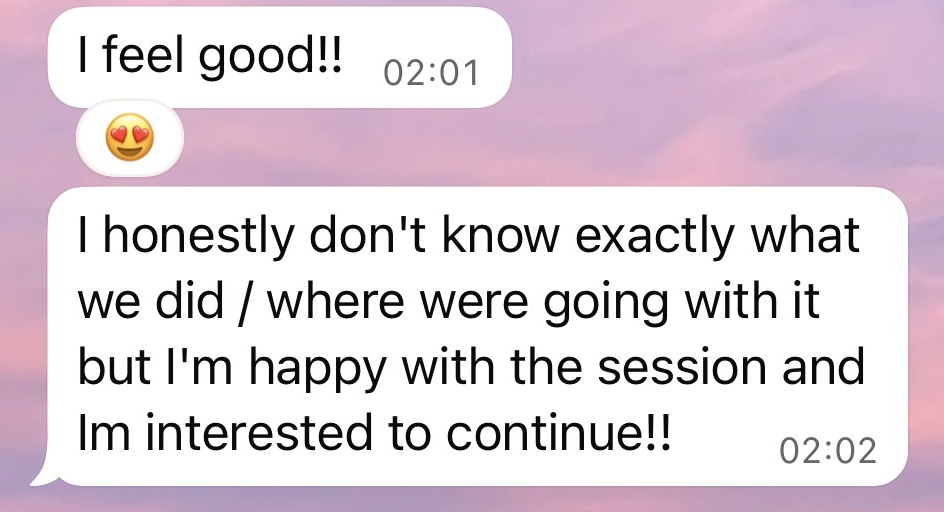
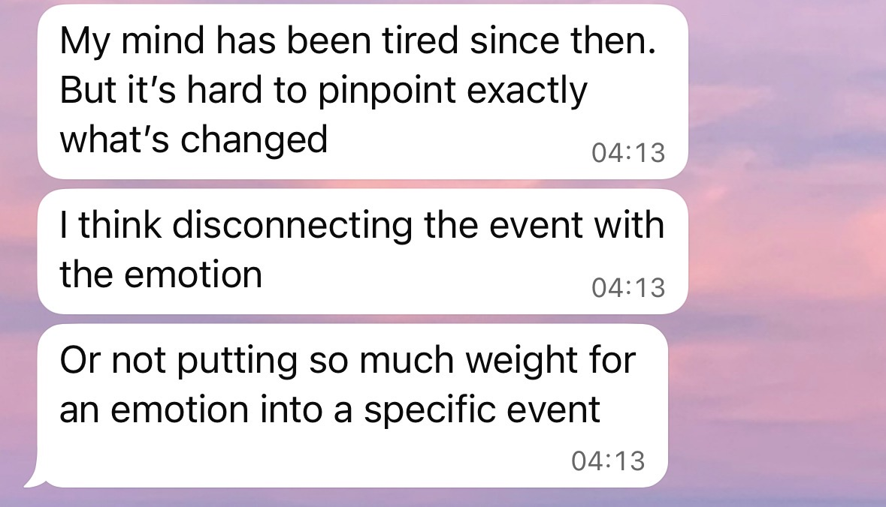
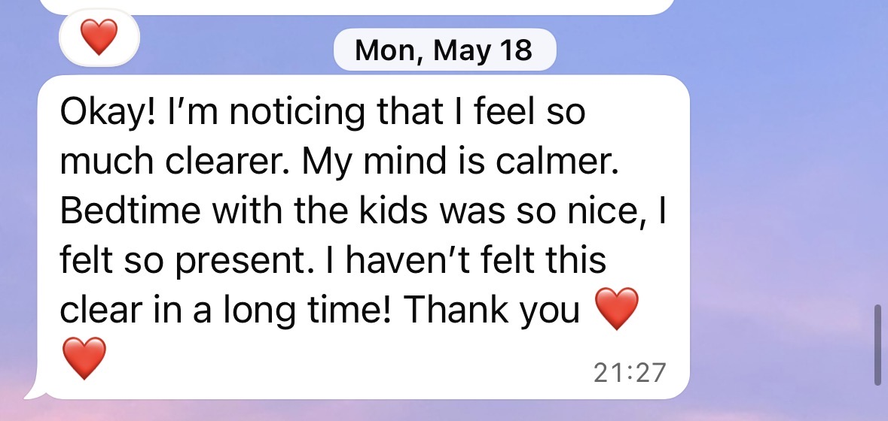
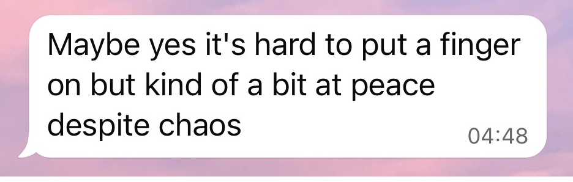
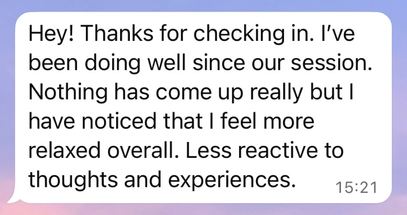
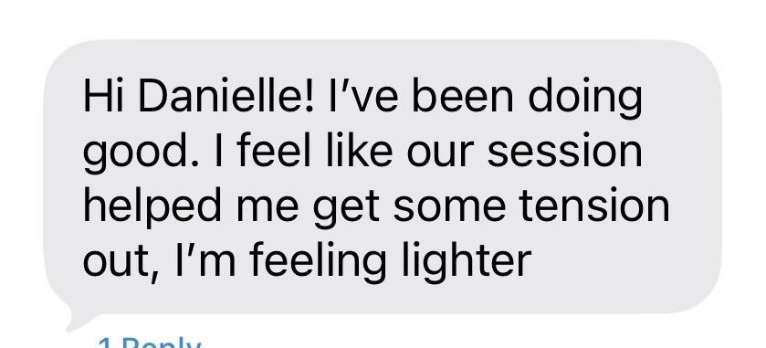

Private 1:1 IEMT sessions in Koh Phangan or online
Feel less stuck.
Create real change.
For the thoughts, fears, reactions, and patterns that keep repeating, even when you understand where they come from.
Message me on WhatsAppSometimes, understanding a problem logically is not enough to change how we feel or react.
You may be experiencing
The same inner loop, again and again.
- Obsessive or repetitive thoughts
- Anxiety, fears, or emotional triggers
- Procrastination and avoidance
- Trouble sleeping or switching off
- Trauma-related reactions
- Low confidence or fear of being seen
- A general feeling of being stuck
What is IEMT?
Integral Eye Movement Technique
IEMT is a practical method that uses guided eye movements, focused questions, and nervous system regulation to work with experiences from the past that are still affecting us today.
When something difficult happens, especially when we do not have the support or resources to fully process it, the experience can remain emotionally active within us.
Even years later, it may continue to influence our thoughts, emotions, beliefs, relationships, and automatic reactions.
IEMT helps the brain update these past experiences, so they no longer create the same level of emotional intensity in the present.
You do not need to know the exact memory
We work with what emerges.
You do not need to arrive knowing where the issue began or which experience caused it.
During the process, we work with the subconscious mind to access the experiences connected to what you are feeling today. Memories, images, emotions, or realizations often come up naturally as we do the work.
You also do not need to explain every detail or repeatedly talk through everything that happened. We work with what emerges, at a pace that feels manageable for your nervous system.
The purpose is not to erase the past. It is to help your brain recognize that the experience is no longer happening now, so it can stop responding as though you are still in the same situation.

Why I offer this work
This work changed my life.
I discovered IEMT after struggling with PTSD-related nightmares for two years, along with a period of severe sleep difficulties.
After just one IEMT session, the nightmares stopped, and I was finally able to sleep again.
That experience changed my life. The shift was so significant that I decided to study the method, become a certified IEMT practitioner, and begin offering sessions to others.
Every person and nervous system is different, and results can vary, but my own experience showed me how powerful this work can be.
What happens in a session?
A structured process, held gently.
We begin by identifying the specific thought, feeling, fear, reaction, or pattern you would like to work on.
You remain conscious, present, and in control throughout the session.
Session details
Private 1:1 sessions are available
- In person in Koh Phangan
- Online through Zoom
- In English or Hebrew
- Sessions are approximately 60 to 75 minutes
Real experiences
From people I’ve worked with
Everyone’s process is different, but many people notice meaningful changes in how they feel, react, and relate to the issue they came in with.
After one session






Testimonials reflect individual experiences. Results and the number of sessions needed vary from person to person.
Curious whether IEMT could support you?
Send me a private WhatsApp message.
Tell me a little about what you are currently struggling with. We can have a short, no-pressure conversation and see whether this work feels like the right fit for you.
Message me on WhatsApp